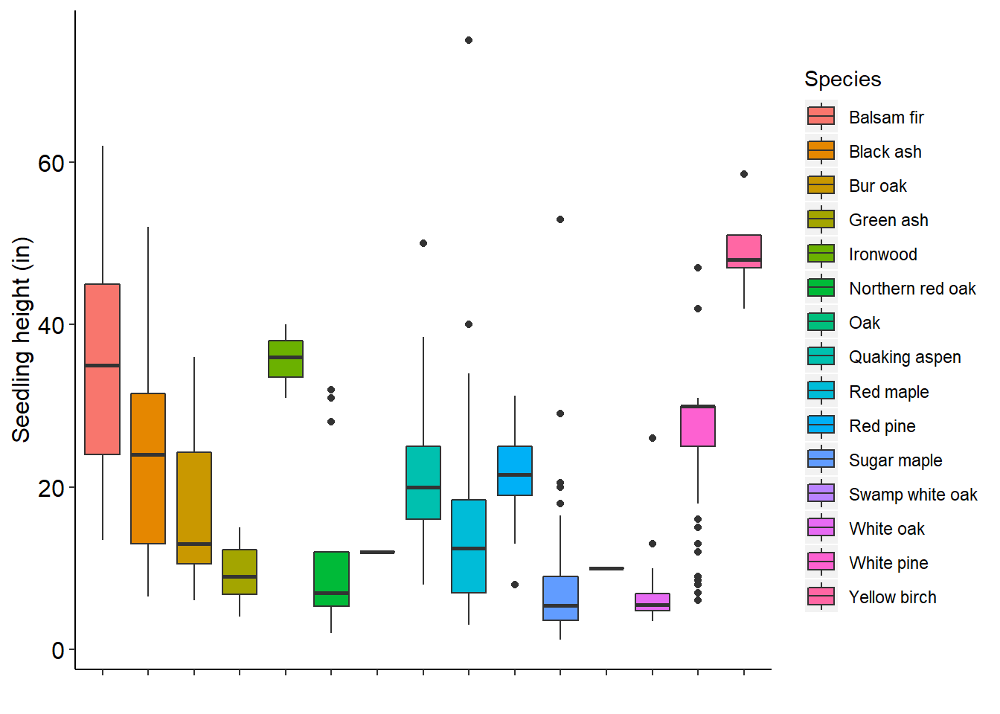
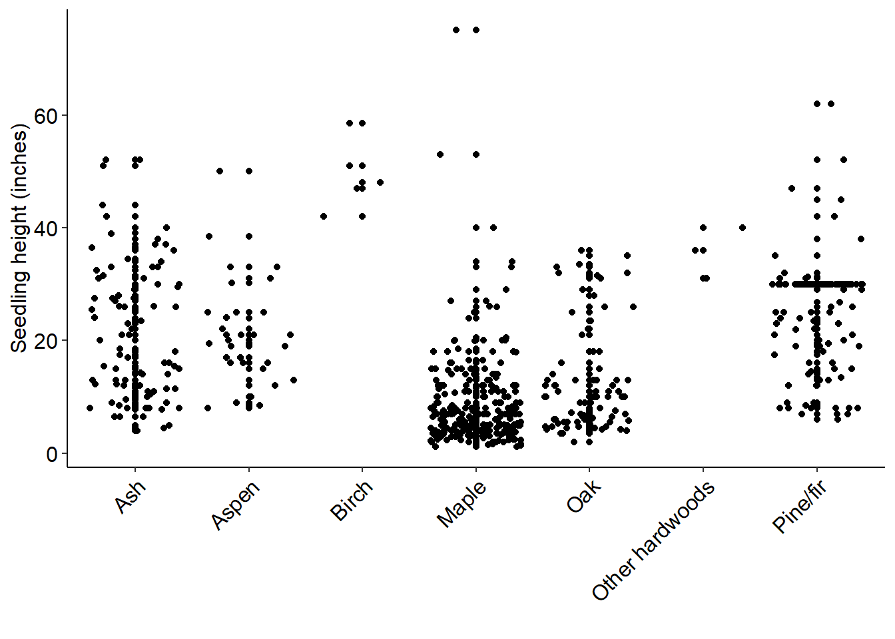
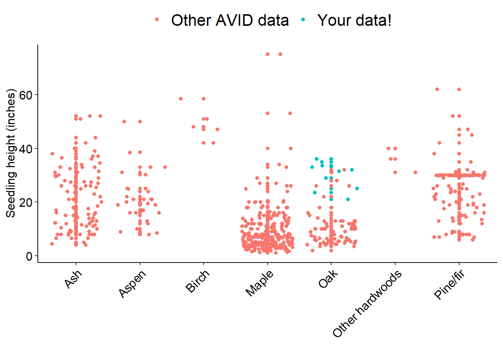
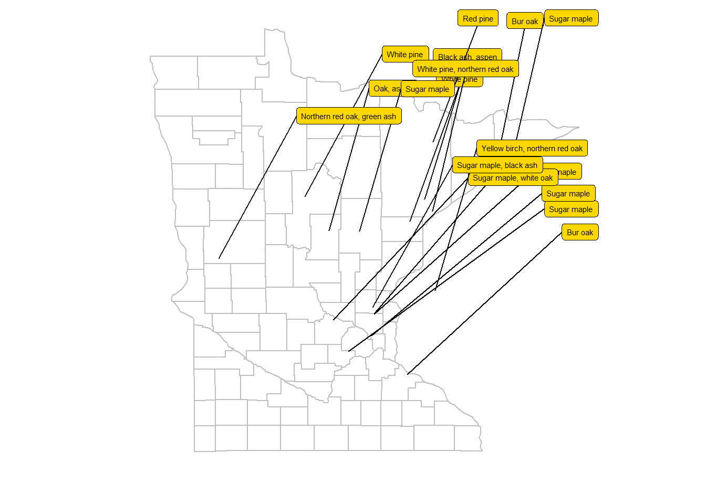

1 Overview
The AVID program is a citizen science programs that monitors the impacts of deer in Minnesota’s forests. Citizen science volunteers collect important data that will allow researchers to gain insights into forest health.
1.1 AVID volunteers have measured many difference species that deer prefer to browse.
Here are the 15 species and their measured heights.

2 Data from 2019
2.1 We’ll make a scatter plot that shows the measured heights.
Note we have grouped the species into broader species groups.

2.2 Can we look at a specific volunteer’s measurements?
Make a graph that shows one volunteers measurements relative to all of the data.

3 Which are the most common tree species measured?
Rank them by number of measurements.
| Species | n.seedlings | mean.ht | sd.ht |
|---|---|---|---|
| Sugar maple | 178 | 7.2 | 5.7 |
| White pine | 92 | 25.7 | 8.7 |
| Black ash | 73 | 23.7 | 11.7 |
| Red maple | 62 | 14.8 | 11.2 |
| Bur oak | 35 | 17.7 | 9.1 |
| Quaking aspen | 31 | 21.2 | 9.3 |
| White oak | 26 | 6.7 | 4.5 |
| Red pine | 24 | 21.3 | 5.5 |
| Northern red oak | 16 | 11.4 | 9.8 |
| Green ash | 14 | 9.3 | 3.6 |
| Balsam fir | 9 | 36.1 | 15.2 |
| Yellow birch | 5 | 49.3 | 6.1 |
| Ironwood | 3 | 35.7 | 4.5 |
| Oak | 1 | 12.0 | NA |
| Swamp white oak | 1 | 10.0 | NA |
4 Program impacts
4.1 Make a map of where the data have been collected.
Data have been collected from 18 locations.
